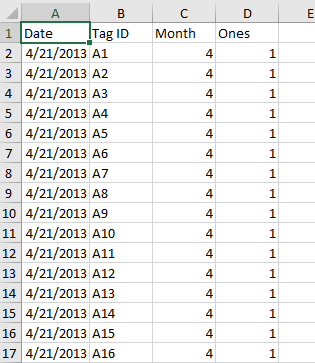
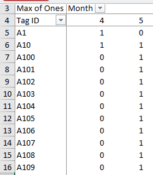

Population size is a basic piece of information needed for monitoring a species. Counting individuals is a necessary, but usually not sufficient, step in assessing the size of a population. Even species that are big, stationary, and obvious may be too numerous to count for logistical reasons. In most instances, we may not actually need to have a complete count of individuals (called a "census"), and a reliable estimate of population size is more than enough.
An estimate is considered reliable if it is sufficiently accurate and precise to address our management needs. For example, consider a population that has been estimated to have 1000 ± 500 individuals in it. With a confidence interval that is 50% of the estimated size of the population we won't be able to detect a decline until the population has declined by 50% of more. Whatever methods we use have to not only give us accurate (a.k.a. unbiased) estimates, they have to give us estimates that are sufficiently precise that we can use them to guide our management decisions.
As we saw in lecture, estimating abundance of sessile organisms, like plants and permanently attached animals, can be done with simple extrapolations from mean numbers in quadrats. There are potential problems with this approach, in that numbers counted at one scale don't always extrapolate linearly to another scale and not all individuals may be countable at the particular time you do your sampling. But, we face even bigger problems with estimating populations of animals that move and hide. To estimate the population sizes of most animals, we need mark-recapture methods.
The Lincoln-Petersen method is one of the oldest mark-recapture methods available. LP employs two capture periods. In the first period, every individual captured is marked and released, and enough time is allowed to elapse so that they mix well into the population. In the second period a sample of individuals is taken, and the number of marked individuals, and total number of individuals are recorded. This is a "batch mark" method, in that we don't need to know the animals individually. It is also a "closed population" method, in that we assume both demographic closure (i.e. no births or deaths) and geographic closure (i.e. no immigration or emigration). We do not need to capture all of the individuals present in the first capture period, and we do not need to re-capture all of the marked individuals in the second. We will use the ratio of marked individuals to total individuals in the second sample (which is a known quantity) along with the total number of marked individuals in the population (which is known, since we marked and released them) to estimate the population size.
We will be working with some (instructor generated) data that mimics a mark/recapture study, as might be done on coast horned lizards in the SDRP. The study started on 4/21/13. There were three different capture periods, one in April, one in May, and one in June. Each animal caught was marked, and dates of recaptures were recorded. The marks were individual and permanent - we won't need to use the individual identifiers for our LP estimates yet, but the fact that marks are permanent is important, because loss of marks would bias the results.
The duration of the study was short enough, and during a time or year in which mortality is low enough for this species, that we can consider the population to be closed demographically and geographically closed.
We will work with the April and May data for today (we will work with all three capture periods when we test for trap responses next week).
So, on to the LP estimator.
1. Download the data. This file has the data we will work with, download it to your S: drive and open it.
**Note that we will actually use this same file for three different activities, and there are several worksheets that you don't need until later - for LP estimation, just stick with the "Captures" sheet. Make sure you save this file in a safe location (and back it up!)**
The Captures sheet has only two columns. Column A has dates of captures, and column B has tag ID's for the captured animal. This file is unusual in that it only records captures - in a real mark/recapture study there would be a lot more variables measured than this, because capturing animals is difficult enough (and risky enough to the animals) that you would record as much information about it as possible once you got your hands on it. We would usually have information about the sex, age, perhaps some morphometric information (weight, lengths, etc.), ID's of any samples taken, and the like. But, for population size estimation the data we need is the date of capture.
You can get a better idea of what the data look like if you "filter" on animal ID's.
Individuals like A6 with more than one capture in a single month are a complication for us - we want to build capture histories that have nothing but 0's and 1's, one for each trapping period (month); counting by month won't work if we have individuals that are trapped more than once in a month. Fortunately, we have a way.
2. Add a column each for capture period and for ones. For the LP estimator we need to designate a "Mark" and a "Recapture" period. If you look at dates, you'll see that the trapping took place over three days each month. Since we're fortunate enough to have the three sample periods in three different months, we can easily identify the periods by month.
You can turn off the filtering by selecting the "Sort & Filter" → "Filter" again - the drop down menus should no longer be present in the column headings.
In cell C1 type "Month", and in C2 type =month(a2). Copy and paste this to the rest of the rows, and you now have a column with the month number for each capture date.
Now, in cell D1 type "Ones", and in cell D2 type the number 1. Copy and paste this to the rest of the rows, so that you a single 1 for each row of data. You'll see why this is needed in the next step.
When you're done with this step your worksheet will look like this (the first 17 rows of it, at least):
3. Make a pivot table.
Next we will use the PivotTable to lay out our data in a form that we can use to make capture histories (that is, strings of 0 and 1).
This gives us a table that displays the capture history for each individual, which is the basic data set we need. The result looks like this:
The next step in estimating population size is to count up how often each of the histories occurred - that is, we need the frequency of each capture history across the individuals in the data set. We'll get those next.
4. Make a single column of capture histories and count frequencies.
To get our counts of frequencies of our various capture histories we first need to combine the 0's and 1's into a column of capture histories, and then count up how many of the three possible histories there are - that is, how many 01, how many 10, and how many 11.
First, we will make the column of capture histories.
To make this a little easier for today, we'll filter out the June captures. Click on "Month" and un-check 6, like this. Now you will only have captures for April and May reported. Individuals who were only captured in June are dropped from the table automatically, so we won't have any 00 histories in the data (if we had only actually done a single recapture period there wouldn't be any 00 histories, so we don't want any in our data now).
Next, we need to make a new column outside of the PivotTable with the capture histories as sequences of 0's and 1's. In cell G4 type the label "Histories". In G5 type =b5&c5. The ampersand, &, is the "concatenation" operator, and it will stick the two values found in B5 and B6 together into one. Normally if you tried to enter the history 01 into a cell, Excel would assume you meant to enter the number 1 and would helpfully remove the leading 0. The concatenation operator, though, converts whatever you give it into text, so a 01 is treated as two text characters instead of a number, and the 0 is retained.
Copy and paste your concatenation formula to the rest of the rows in the pivot table (not including the grand total row, so down to G151).
Next, we need to count up how many of the three capture histories there are in this new column:
Your final table of frequencies should look like this.
These frequencies of each capture history have all the information we need to estimate population size using the LP estimator.
5. Calculate the values needed for LP. For the LP estimator, we need to know:
M = total marked individuals in the first sample (April)
c = total animals caught in the second sample (May)
r = animals recaptured in the second sample.
In cell i11 type "M". M includes every individual caught in April, because all of them were marked when they were caught. The first digit in our histories is the April capture period, and any animal with a history with a 1 as the first digit was captured in April. The two histories that had a capture in April are 10 and 11, so in cell J11 add these two frequencies. (Note that if you are trying to build formulas by clicking into cells of the PivotTable you'll probably get an odd "GetPivotData" reference inserted. You can turn off this irritating behavior by selecting "File" → "Options", the in the "Formulas" options un-check the "Use GetPivotData functions..." option.)
Next, in i12 type "c". Animals that were captured in May have histories 01 or 11, so in cell J12 sum the frequencies of these two histories.
Finally, in cell i13 type "r". The recaptured animals are only the 11 histories, because these are the only animals caught in April were were the caught again in May. Enter the frequency of 11's in cell J13.
5. Calculate population size. Estimated population size is just N = Mc/r. In cell I15 type "N-hat", and in J15 calculate the estimate - you should get 305.6, if you did it right.
6. Calculate the 95% confidence interval. Now that we have an estimate, we need to also calculate the 95% confidence interval for it.
In cell I16 type "Var(N-hat)" - the variance of an estimator is the square of the standard error, and we need the standard error for our CI. The formula for the variance of N-hat is:
((M+1)*(c+1)*(M-r)*(C-r))/(((r+1)^2)*(r+2))
See if you can translate this to an Excel formula - instead of M, c, and r use the cell references for these values in your worksheet. Enter the formula in cell J16 (if you get the formula right the value will be 1824). Be good, try it yourself for the practice, but if you can't make it work click here for the formula.
Next, in cell i17 type "se", and in J17 take the square root of the Var(N-hat).
In cell i18 type "Lower", and in J18 subtract 1.96*se from N-hat - you should get 221.9 (note that 1.96 is the number of standard deviations needed to capture 95% of observations under the normal distribution - this value is serving the purpose of the t-value in our previous confidence interval calculations, in that it gives us the number of standard errors above and below the mean needed to capture 95% of the possible LP population size estimates, but for LP estimates using the normal curve works better).
In cell i19 type "Upper", and in J19 add 1.96*se to N-hat - you should get 389.3.
You now have an estimate of population size and a 95% confidence interval for it - based on these data, the LP estimate for population size is 305.6, and we are 95% confident that the population value falls between 221.9 and 389.3.
That's it for today. Save your Excel sheet, you'll need it again next time, and for your report write up.